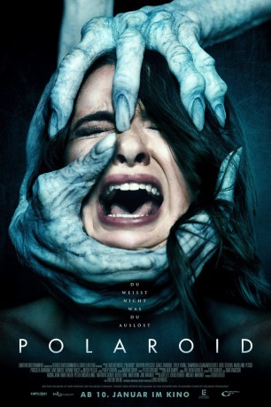

#11222 Polaroid
 
 IMDB-Wertung: 5.1 / 10
IMDB-Wertung: 5.1 / 10  Metascore: 0
Metascore: 0 
Die Schülerin Bird Fitcher ist ganz begeistert von ihrem neuen Spielzeug, das sie in einem unscheinbaren Antiquitätenladen aufgetrieben hat: eine alte Sofortbildkamera! Doch schon nach den ersten Schnappschüssen muss sie erkennen, dass der Apparat ein tödliches Geheimnis birgt. Denn wer von ihm fotografiert wird, findet noch in derselben Nacht sein tragisches und gewaltsames Ende.
Jahr: 2019
Dauer: 87 Minuten
FSK: 16
Land: Kanada Studio: Wild BunchTonspuren: DTS - ,
Untertitel: Deutsch,
Auflösung: 1080p (1920x800) Größe: 7526 MB
Genre: Thriller, Horror, Drama
Regisseur: Lars Klevberg
Drehbuch: Blair Butler
Soundtrack: Philip Giffin
Darsteller:
- Kathryn Prescott als Bird Fitcher
- Tyler Young als Connor Bell
- Samantha Logan als Kasey
- Keenan Tracey als Devin
- Priscilla Quintana als Mina
 Javier Botet als The Entity
Javier Botet als The Entity Mitch Pileggi als Sheriff Pembroke
Mitch Pileggi als Sheriff Pembroke- Davi Santos als Tyler
- Katie Stevens als Avery
 Grace Zabriskie als Lena Sable
Grace Zabriskie als Lena Sable- Madelaine Petsch als Sarah
- Erika Prevost als Linda
 Shauna MacDonald als Bird's Mother
Shauna MacDonald als Bird's Mother Elisa Moolecherry als Nurse #1
Elisa Moolecherry als Nurse #1- Riley Raymer als Nurse #2
 Rob Mars als Diner Cop
Rob Mars als Diner Cop- Matthew Lumley als Bird's Father
- Michael Chandler als School Photographer
- Janna MacDonald als Carolyn (uncredited)
- Ned the Dog als Bird's Dog (uncredited)
- Rhys Bevan-John als Roland Joseph Sable
- Emily Power als Rebecca Sable
- Kolton Stevens als Young Pembroke
- Sam Davison als Sable Victim #1
- Nathaniel Dooks als Sable Victim #2
- Kansas Gallagher als Sable Victim #3
- Don Ritchie als Deputy Sheriff
- Juan Arboleda als Paramedic (uncredited)
- Sam Humphreys als Teen Scavenger (uncredited)
- Chaz Libby als Teen Scavenger (uncredited)
- Steve Wohlmuth als Police Officer (uncredited)
Datei: X:\2019(N-Z)\Polaroid (2019, FSK16, 1920x800).mkv seit 20.05.2019
Festplatte: HD 2018(G-Z)-2019(A-Z)
 Es gibt insgesamt 62 Filme in der Gruppe '2019(N-Z)'
Es gibt insgesamt 62 Filme in der Gruppe '2019(N-Z)'